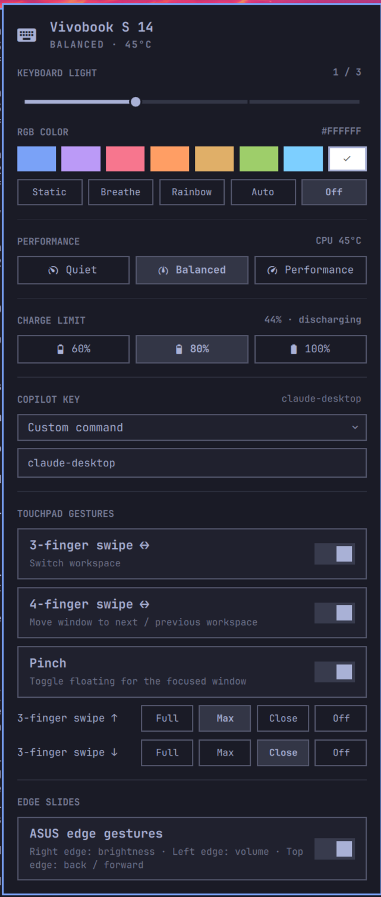

Keyboard RGB, performance modes, battery charge limit, the Copilot key and ASUS edge gestures, as a native omarchy-shell plugin. It lives in your bar, follows your theme, and hooks into the Omarchy menu, OSD and keybindings.
omarchy plugin add https://github.com/leandrooricchio/omarchy-vivobook.git --enable
● Super+Shift+V charge cap 80% ✓ ● edge slides activeOmarchy already handles brightness, audio and power. Vivobook Control adds the hardware that's specific to this laptop, and remembers every setting across reboots, suspend and shell restarts.
Any color, plus Static, Breathe, Rainbow or the firmware's own effect. It drives the ITE5570
controller directly, which asusctl doesn't support.
A 4-step backlight slider that stays in sync with the Fn keys. Right-click or scroll the bar icon to change it without opening the panel.
Quiet, Balanced or Performance, with live CPU temperature. It's the only control that changes how the fan behaves on this model.
Cap charging at 60, 80 or 100 % to keep your battery healthy when you're mostly plugged in. The limit is restored at boot and after resume.
Omarchy maps it to the menu. Make it launch your default Omarchy agent, toggle this panel, or run any command. Changes need no reload.
Hyprland multi-finger gestures, plus the ASUS edge sliders for brightness, volume and back/forward. Taps, scrolling and palm rejection work exactly as before.
It isn't a separate app or tray icon. Vivobook Control is an omarchy-shell plugin that calls Omarchy's own commands, so it picks up your theme, your agent and your power settings.
Built from the shell's own components and theme colors, so it changes with every theme you switch to. Try the buttons above.
Vivobook Control, Keyboard RGB Next Color and Touchpad Edge Gestures are added next to Omarchy's own hardware entries.
Keyboard light, color and profile changes show the Omarchy OSD. Edge slides go through
omarchy-brightness-display and omarchy-audio-output-volume.
Profiles are set through Omarchy, so its separate AC and battery memory and its battery-aware switching keep working.
By default the Copilot key opens your default Omarchy agent in a terminal, or the agent picker if you haven't set one.
Install, update and remove it with Omarchy's own plugin manager, like any other shell plugin.
Keybindings and gestures are written to the toggles folder that Omarchy loads on every
hyprctl reload. Nothing under ~/.config/hypr is touched, so Omarchy
updates and your own edits never conflict.
Open it with a key, move around with Vim keys, and Tab over to the next bar panel.
The swatches are the Tokyo Night palette Omarchy ships with, and any hex color
works from the CLI. The Vivobook S 14 keyboard is a single RGB zone behind an ITE5570
controller, which asusctl doesn't support, so Vivobook Control talks to it directly.
vivobook-ctl rgb setToggle each one in the panel. The 3-finger swipe uses Hyprland's live workspace animation, and edge slides bring back the ASUS Windows sliders.
Switch workspace with a live swipe animation.
Carry the focused window to the next workspace.
Toggle floating for the focused window.
Right edge brightness, left edge volume, top edge back/forward.
Every control is also a vivobook-ctl command and an
omarchy-shell IPC call, ready for your own Hyprland bindings.
omarchy-shell vivobook rgbNext❯ vivobook-ctl rgb set 7aa2f7 ❯ vivobook-ctl rgb effect breathing ❯ vivobook-ctl profile set performance ❯ vivobook-ctl charge set 80 ❯ vivobook-ctl copilot set agent-pick ❯ vivobook-ctl status --json # all panel state ❯ vivobook-ctl doctor # what's unlocked ❯ omarchy-shell vivobook profileCycle
Nothing runs as root at runtime. One setup step grants exactly the access the plugin needs, and nothing more.
setup.sh copies its files into a root-owned staging folder, checks them against
SHA256SUMS (and your own --expect digest), and only then installs from
that copy.
The RGB controller, uinput and touchpad are opened to the logged-in user through udev
uaccess ACLs. No group changes, no re-login.
The only sudoers entry allows a tiny charge-limit helper that accepts 60,
80 or 100 and nothing else. A root-owned uninstaller removes it all.
Omarchy's plugin manager adds the panel to your bar. A one-time sudo step then unlocks RGB, the charge limit and edge slides. It shows the payload digest before installing anything.
omarchy plugin add https://github.com/leandrooricchio/omarchy-vivobook.git --enablesudo ~/.config/omarchy/plugins/io.github.leandrooricchio.vivobook/setup.shTo update, run omarchy plugin update, then run setup.sh again;
vivobook-ctl doctor tells you when it's needed. To remove everything, run
sudo /usr/local/libexec/vivobook/uninstall, then omarchy plugin remove.